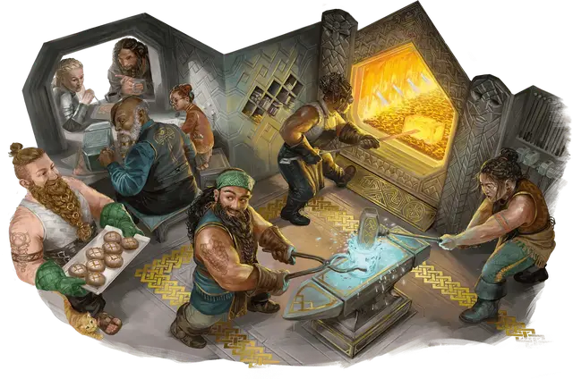

Дварф
Dwarf

Тип существа Гуманоид
Размер Средний (рост около 4-5 футов)
Скорость 30 футов
В древние времена дварфы были подняты из земли божеством кузни. В разных мирах называемое по-разному — Морадин, Реоркс и другие — это божество наделило дварфов сродством к камню и металлу и к жизни под землёй. Оно также сделало их устойчивыми, как горы; дварфы живут около 350 лет.
Приземистые, зачастую бородатые, первые дварфы высекали города и крепости на склонах гор и под землёй. Их древнейшие легенды повествуют о столкновениях с чудовищами горных вершин и Подземья, громадными великанами и подземными ужасами. Вдохновленные этими историями, дварфы любой культуры часто поют о доблестных деяниях — особенно о том, как маленькие побеждают сильных.
В некоторых мирах мультивселенной первые поселения дварфов были построены на холмах или в горах, и семьи, которые ведут свою родословную от этих поселений, называют себя холмовыми и горными дварфами соответственно. Это верно, например, для сеттингов "Серого ястреба" и "Саги о копье".
Особенности
Вы обладаете следующими особенностями вида:
Тёмное зрение. У вас есть Тёмное зрение дальностью 120 футов.
Дварфийская устойчивость. У вас есть Сопротивление урону Ядом. Вы также совершаете с Преимуществом спасброски на избежание или окончание состояния Отравленный.
Дварфийская крепость. Ваш максимум Хитов увеличивается на 1, и он увеличивается ещё на 1 каждый раз, когда вы получаете уровень.
Знание камня. Бонусным действием вы на 10 минут получаете Чувство вибрации дальностью 60 футов. Чтобы использовать это Чувство вибрации, вы должны находиться на каменной поверхности или прикасаться к каменной поверхности. Камень может быть как обработанным, так и необработанным. Вы можете использовать эту особенность количество раз, равное вашему Бонусу владения. Вы восстанавливаете все потраченные использования по завершению Долгого отдыха.